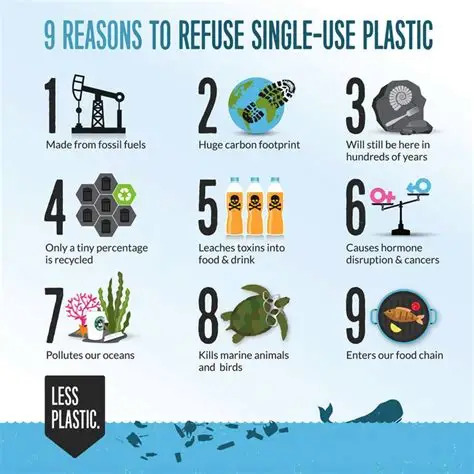
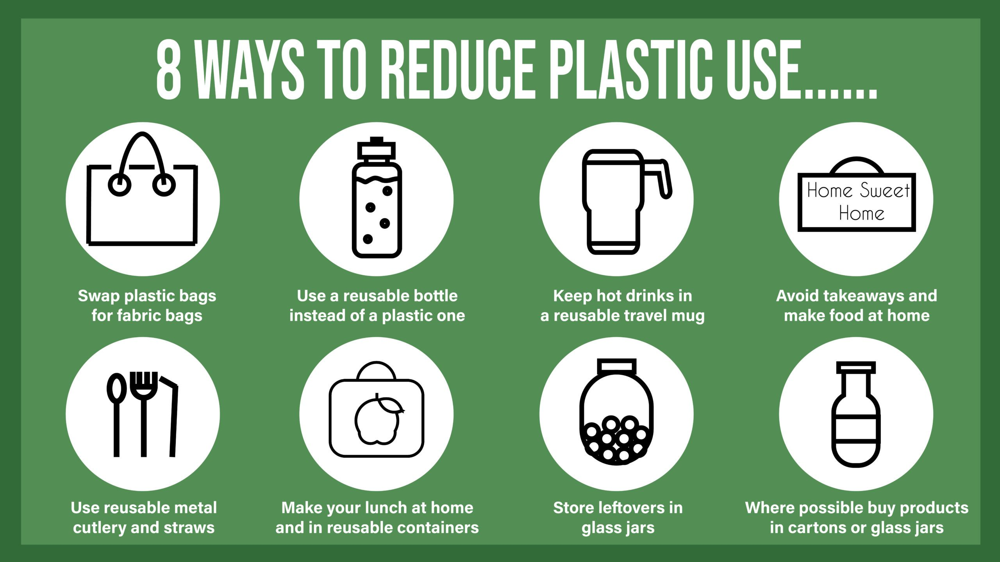

Reducing plastic pollution requires changes in consumer behavior, policy interventions, and industry practices.
By making small changes in our daily lives, we can significantly reduce the amount of plastic waste we generate. These changes protect the environment and promote a sustainable future.

Implementing simple changes in your daily routine can significantly reduce plastic waste and contribute to a healthier environment:
Reducing plastic waste is a journey that requires collective effort. Choosing a reusable water bottle can save an average of 156 plastic bottles annually per person.
By taking steps to reduce consumption and supporting sustainable initiatives, we can contribute to a future where plastic pollution is significantly minimized.
Back to Main Page| Main Page | Source of Information Used | Source of Diagram Used | Tool Used to Create Favicon |